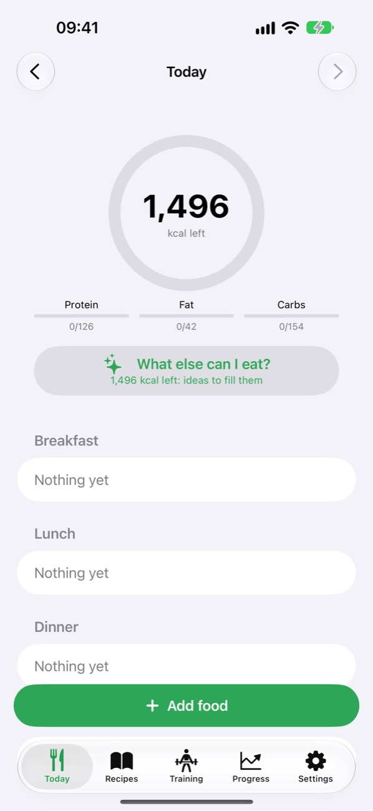

EcoPlate: AI Calorie Counter
Калорії за фото страви
Сфотографуйте страву й отримайте оцінку калорій, білків, жирів і вуглеводів за лічені секунди. EcoPlate допомагає легко вести щоденник харчування.
Незабаром в App Store
Знімки екрана



Що ви отримуєте
- ШІ-фото страв: назва, складники й грами, які можна виправити
- Сканер штрихкодів і вбудований пошук продуктів
- Денна норма за вашою метою, параметрами й активністю
- Рецепти під залишок калорій
- «Чим добрати калорії»: випадкова страва під залишок або ідеї ШІ за побажанням чи фото холодильника
- Облік води з нагадуваннями на iPhone і Apple Watch
- Плани тренувань, які можна редагувати, з покроковою технікою й порадами тренера
- Графік ваги, калорії за тиждень, Apple Health і віджет на головному екрані
9 мов: українська, англійська, іспанська, французька, німецька, португальська, китайська, гінді, арабська
Безкоштовно
Штрихкод, пошук і щоденник, 3 пробні ШІ-фото та ще 1 на день за перегляд реклами.
Premium
До 15 ШІ-фото на день, рецепти з холодильника, усі рецепти, персональний план тренувань від ШІ, меню на тиждень зі списком покупок і жодної реклами.
Щоденник зберігається на вашому телефоні. Оцінки ШІ приблизні й не є медичною порадою.